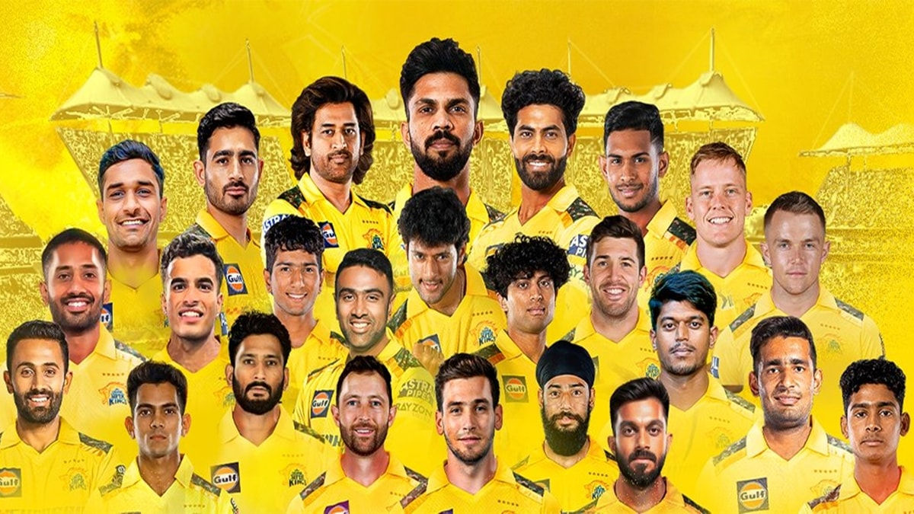

Chennai Super Kings(CSK)

Chennai Super Kings is an Indian professional T20 cricket franchise based in
Chennai, Tamil Nadu. The team competes in the Indian Premier League and was
one of the eight franchises incorporated when the league was established in 2008.
Players:
- MS Dhoni
- Matheesha Pathirana
- Noor Ahmad
- Khaleel Ahmedl
- Ravichandran Ashwin
- Mukesh Choudhary
- Devon Conway
- Sam Curran
- Sam Curran
- Nathan Ellis
- Ramakrishna Ghosh
Achievements:
Here's a more detailed look at their achievements:
- IPL Titles: 5 (2010, 2011, 2018, 2021, 2023)
- Champions League Twenty20 (CLT20) Titles: 2 (2010, 2014)
- Most IPL Playoff Appearances: 12
- Most IPL Final Appearances: 10
- Record for Most IPL Titles as Captain: 5 (MS Dhoni)